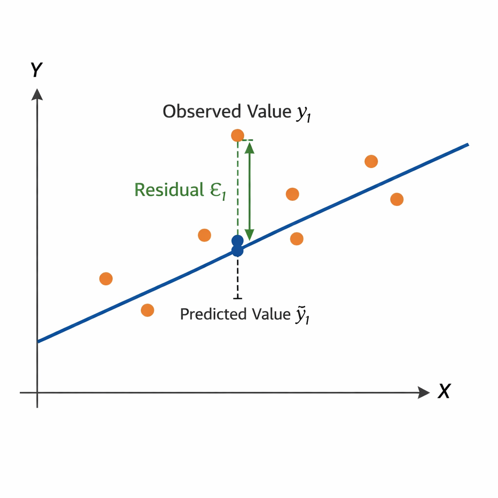

Analytics & Big Data
Session 4: Regression IProf. Dr. Gerit Wagner
(2026-03-30)
- Explain the stages of a model-based analytics workflow using linear regression as an example.
- Interpret linear regression models, including coefficients, OLS estimation, and model evaluation.
- Describe how regression models are implemented in Python.
Process
In this session, we follow the CRISP-DM process:
Business understanding
Case: House prices — What drives property value?

Housing markets represent one of the largest asset classes in most economies. Residential real estate accounts for a substantial share of household wealth, and even small pricing errors can translate into large financial consequences.
Understanding what drives house prices is therefore relevant for:
- Real estate firms use pricing models to advise clients.
- Banks rely on valuation models to assess collateral and manage mortgage risk.
- Insurers and policymakers use property data for risk assessment, taxation, and urban planning.
How could we use analytical models, such as regression models, to understand the drivers of prices?
Data understanding
Dataset: Ames Housing (Kaggle)
To answer our question, we need a dataset that includes:
- Sale prices
- Physical attributes (e.g., size, rooms)
- Location characteristics
- Quality indicators
To address this, we turn to a publicly available dataset on Kaggle: the Ames Housing dataset, which provides detailed information on residential properties and their sale prices.
About Kaggle
Kaggle is a popular data science platform offering:
- Public datasets
- Notebooks for analysis
- Competitions
- An active community
Load the data
As a first step, we retrieve the dataset and load it into our Python environment for analysis.
| Order | PID | area | price | MS.SubClass | MS.Zoning | Lot.Frontage | Lot.Area | Street | Alley | ... | Screen.Porch | Pool.Area | Pool.QC | Fence | Misc.Feature | Misc.Val | Mo.Sold | Yr.Sold | Sale.Type | Sale.Condition | |
|---|---|---|---|---|---|---|---|---|---|---|---|---|---|---|---|---|---|---|---|---|---|
| 0 | 1 | 526301100 | 1656 | 215000 | 20 | RL | 141.0 | 31770 | Pave | NaN | ... | 0 | 0 | NaN | NaN | NaN | 0 | 5 | 2010 | WD | Normal |
| 1 | 2 | 526350040 | 896 | 105000 | 20 | RH | 80.0 | 11622 | Pave | NaN | ... | 120 | 0 | NaN | MnPrv | NaN | 0 | 6 | 2010 | WD | Normal |
| 2 | 3 | 526351010 | 1329 | 172000 | 20 | RL | 81.0 | 14267 | Pave | NaN | ... | 0 | 0 | NaN | NaN | Gar2 | 12500 | 6 | 2010 | WD | Normal |
| 3 | 4 | 526353030 | 2110 | 244000 | 20 | RL | 93.0 | 11160 | Pave | NaN | ... | 0 | 0 | NaN | NaN | NaN | 0 | 4 | 2010 | WD | Normal |
| 4 | 5 | 527105010 | 1629 | 189900 | 60 | RL | 74.0 | 13830 | Pave | NaN | ... | 0 | 0 | NaN | MnPrv | NaN | 0 | 3 | 2010 | WD | Normal |
5 rows × 82 columns
An important step is to understand the meaning of the variables—that is, what each column represents and how the data was collected.
Understanding the variables
To understand the variables, we consult the dataset documentation and create a structured overview.
We create a small table that summarizes key variables:
| Variable | Meaning | Unit / Values | Notes |
|---|---|---|---|
Order |
Unique order number | — | Check for duplicates, NA not allowed |
PID |
Parcel identification number | — | Same property can appear multiple times (e.g., repeated sales) |
area |
Above-ground living area | Square feet | Check for plausible ranges and consistency |
price |
Sale price of the property (target variable) | USD | Check format, missing values, and outliers |
MS.SubClass |
Type of dwelling | Categorical codes (e.g., 020, 060) | Retrieve code definitions and check consistency with other variables |
MS.Zoning |
General zoning classification | Categorical (e.g., RL, RM, FV) | TODO: Understand categories (may require external expertise) |
... |
Additional variables (e.g., lot size, street type) | — | … |
this step often involves acquiring access to data, extracting it from systems, consulting documentation, talking to domain experts, and making sense of how the data was collected and defined.
Data preparation
Prepare and explore the data
Before estimating a regression model, we first prepare and explore the data. Key steps include:
Check data quality
- What are the units and possible values?
- Missing values, duplicates, inconsistencies
- Plausibility of values (e.g., extreme prices or sizes)
Format and transform variables
- Numeric vs. categorical variables
- Encoding categories, scaling if needed
Explore relationships
- Summary statistics
- Distributions and scatter plots
Note
These steps were covered in detail in the data preparation lecture. Here, we focus on the analytical modeling.
Modeling
Model choice
1. Specify prediction task
- Define the target variable (e.g., price as a continuous variable)
2. Collect candidate models (selective overview)
| Model family (examples) | Strengths | Limitations |
|---|---|---|
| Regression models (Linear, Ridge, Lasso) | Interpretable, simple, well understood | Limited prediction performance, few predictors |
| Clustering (e.g., k-means) | Identifies structure in data | Not designed for prediction tasks |
| Machine learning models (e.g., Neural Networks) | Strong predictive performance, flexible | Less interpretable, require tuning, can overfit |
3. Select model
- Trade-offs: interpretability vs. performance; simplicity vs. flexibility
- Model complexity: flexible models capture patterns but may overfit
- Performance: unknown → must be tested empirically
4. Test and compare
→ Start with a simple, interpretable baseline (e.g., linear regression)
→ Then implement more complex models for comparison
Regression models: A visual illustration
Model formula: \[price = \beta_0 + \beta_1*squarefoot\]
n = 40
mulberry32 = (a) => () => {
a |= 0; a = a + 0x6D2B79F5 | 0
let t = Math.imul(a ^ a >>> 15, 1 | a)
t = t + Math.imul(t ^ t >>> 7, 61 | t) ^ t
return ((t ^ t >>> 14) >>> 0) / 4294967296
}
rand = mulberry32(12345)
data = Array.from({length: n}, () => {
const squarefoot = 500 + rand() * 3000
const noise = (rand() - 0.5) * 100000
const price = 50000 + squarefoot * 180 + noise
return {squarefoot, price}
})
xmin = Math.min(...data.map(d => d.squarefoot))
xmax = Math.max(...data.map(d => d.squarefoot))
fitLine = [
{ squarefoot: xmin, price: beta0 + beta1 * xmin },
{ squarefoot: xmax, price: beta0 + beta1 * xmax }
]Visualization
viewof combinedSliders = {
const b0 = Inputs.range([0, 300000], {value: 50000, step: 5000, label: "β₀ (base price)"})
const b1 = Inputs.range([50, 400], {value: 180, step: 5, label: "β₁ (price per sq ft)"})
const div = html`<div style="display:flex; gap:2rem; align-items:center;">${b0}${b1}</div>`
div.value = {beta0: b0.value, beta1: b1.value}
b0.addEventListener("input", () => {
div.value = {beta0: b0.value, beta1: b1.value}
div.dispatchEvent(new Event("input"))
})
b1.addEventListener("input", () => {
div.value = {beta0: b0.value, beta1: b1.value}
div.dispatchEvent(new Event("input"))
})
return div
}
beta0 = combinedSliders.beta0
beta1 = combinedSliders.beta1Plot.plot({
height: 480,
marginLeft: 70,
grid: true,
x: { label: "squarefoot" },
y: {
label: "price ($)",
domain: [0, Math.max(...data.map(d => d.price)) * 1.1]
},
marks: [
Plot.dot(data, {x: "squarefoot", y: "price", r: 3}),
Plot.line(fitLine, {x: "squarefoot", y: "price", stroke: "crimson", strokeWidth: 3})
]
})Interpreting the regression model
exampleData = [
{squarefoot: 800, price: 196000},
{squarefoot: 1200, price: 272000},
{squarefoot: 1500, price: 322000},
{squarefoot: 1900, price: 394000},
{squarefoot: 2300, price: 466000},
{squarefoot: 2700, price: 538000},
]
exampleFit = [
{squarefoot: 800, price: 50000 + 180 * 800},
{squarefoot: 2700, price: 50000 + 180 * 2700}
]The model
\[\hat{y} = \beta_0 + \beta_1 \cdot x\]
\[\hat{\text{price}} = 50{,}000 + 180 \cdot \text{squarefoot}\]
- β₀ = 50,000 — intercept
- The predicted price for a house with 0 sq ft. Rarely meaningful on its own — it anchors the line.
- β₁ = 180 — slope
-
The slope (or marginal effect) of square footage:
each additional square foot is associated with +$180 in predicted price, on average.
Prediction example
How much would a 1,500 sq ft house cost?
\[\hat{price} = 50{,}000 + 180 \times 1{,}500 = \$322{,}000\]
Plot.plot({
height: 320,
marginLeft: 70,
grid: true,
x: { label: "squarefoot", domain: [600, 2900] },
y: { label: "price ($)", domain: [100000, 550000] },
marks: [
Plot.dot(exampleData, {x: "squarefoot", y: "price", r: 5, fill: "#334155"}),
Plot.line(exampleFit, {x: "squarefoot", y: "price", stroke: "crimson", strokeWidth: 2.5}),
// vertical dashed line at x = 1500
Plot.ruleX([1500], {stroke: "#f59e0b", strokeWidth: 2, strokeDasharray: "6,4"}),
// horizontal dashed line at y = 322000
Plot.ruleY([322000], {stroke: "#f59e0b", strokeWidth: 2, strokeDasharray: "6,4"}),
// annotation dot at prediction point
Plot.dot([{squarefoot: 1500, price: 322000}], {
x: "squarefoot", y: "price", r: 7,
fill: "#f59e0b", stroke: "white", strokeWidth: 2
}),
// label
Plot.text([{squarefoot: 1560, price: 335000}], {
x: "squarefoot", y: "price",
text: ["$322,000"],
fill: "#f59e0b",
fontSize: 13,
fontWeight: "bold"
})
]
})Including multiple predictor variables
We can include many additional variables to predict the price of a house. Each coefficient (β) captures the differential effect of a variable—that is, how much the price is expected to change when that variable increases while the others are held constant.
As we add more predictors, the model becomes multidimensional, making it increasingly difficult to visualize.
Ordinary Least Squares Regression (OLS)
OLS is a linear approach for predicting a quantitative response \((Y)\) based on a set of predictor variables \(X_j\).
\[ y_i = \beta_0 + \beta_1 x_{1,i} + \beta_2 x_{2,i} + \dots + \beta_p x_{p,i} + \epsilon_i \]
or in vector form
\[ y_i = \beta_0 + \beta' x_i + \epsilon_i \]
The optimal regression line minimizes the Residual Sum of Squares (RSS):
\[ RSS = \sum_{i=1}^{n} \epsilon_i^2 = \sum_{i=1}^{n} (y_i - \hat{y}_i)^2 = \sum_{i=1}^{n} (y_i - \beta_0 - \beta' x_i)^2 \]

Matrix representation
\[ y = X\beta + \epsilon \]
where
\[ y = \begin{bmatrix} Y_1 \\ Y_2 \\ \vdots \\ Y_n \end{bmatrix} \quad X = \begin{bmatrix} 1 & x_{1,1} & \dots & x_{m,1} \\ 1 & x_{1,2} & \dots & x_{m,2} \\ \vdots & \vdots & \ddots & \vdots \\ 1 & x_{1,n} & \dots & x_{m,n} \end{bmatrix} \]
Closed-form solution
The parameter vector can be estimated by
\[ \beta = (X'X)^{-1}X'y \]
Learning focus
Aim to understand and explain the OLS procedure. You are not required to memorize the formulas for RSS or the closed-form OLS solution.
Implementation in Python (I)
- 1
- Import relevant libraries
- 2
- Load the Ames housing dataset
- 3
- Select predictor variables
- 4
- Create the regression model
- 5
- Estimate the model on the data
Implementation in Python (II)
Intercept: 180,921
Predictor Coefficient
squarefoot 110.85
Overall.Qual 28,567.43
R^2: 0.56Evaluation
Evaluation
After estimating a regression model, we need to evaluate whether it is useful and reliable.
Evaluation focuses on three complementary questions:
Can we trust the model?
→ Are the underlying assumptions reasonably satisfied?How well does the model perform?
→ Does it explain variation and make accurate predictions?What do the coefficients tell us?
→ Are the estimated relationships meaningful and relevant?
Model assumptions
Regression models rely the following assumptions:
- Linear relationship between predictors and outcome
- Independent observations
- Constant variance of errors (homoscedasticity)
- Errors normally distributed
After fitting a model, we can evaluate whether these assumptions are reasonable. Different violations affect different aspects of the model (interpretation, uncertainty, prediction).
| Assumption violated | Coefficients (interpretation) | Confidence intervals / p-values (uncertainty) | Prediction (performance) |
|---|---|---|---|
| Linearity | ❌ biased | ❌ invalid | ⚠️ worse |
| Independence | ✅ OK | ❌ too optimistic | ⚠️ context-dependent |
| Homoscedasticity | ✅ OK | ❌ incorrect SEs | ✅ mostly OK |
| Normality | ✅ OK | ⚠️ small-sample issue | ✅ OK |
Overall model
A common measure to assess the performance of a regression model is \(R^2\) (the coefficient of determination):
\[ R^2 = 1 - \frac{RSS}{TSS} \]
Measures the share of variance in the target variable explained by the model
Example: (\(R^2\) = 0.56) means the model explains 56% of the variation in house prices
Values range from 0 to 1, with higher \(R^2\) generally indicating a better fit
But a high \(R^2\) does not automatically mean the model is useful in practice. \(R^2\) says little about:
- whether predictions are accurate enough for decisions
- whether the model generalizes to new data
- whether coefficients should be interpreted causally
Other evaluation measures
MAE (Mean Absolute Error) Average absolute prediction error → easy to interpret in the unit of the target variable
RMSE (Root Mean Squared Error) Penalizes large errors more strongly → useful when large mistakes are especially costly
Coefficients
Regression coefficients tell us how the predicted outcome changes when a predictor changes, holding the other predictors constant.
For a coefficient \(\beta_j\):
Sign Positive: higher \(x_j\) is associated with higher predicted price Negative: higher \(x_j\) is associated with lower predicted price
Magnitude Indicates the expected change in the target variable for a one-unit increase in \(x_j\)
Example:
\(\beta_\text{squarefoot}\) = 110.85 → one additional square foot is associated with about +$110.85 in predicted price
\(\beta_{\text{Overall.Qual}}\) = 28,567.43 → one additional quality point is associated with about +$28,567 in predicted price
When evaluating coefficients, consider both:
1. Statistical significance
- Asks whether the estimated relationship is likely different from zero
- Commonly assessed with standard errors, t-tests, p-values, confidence intervals
2. Practical significance
- Asks whether the effect is large enough to matter in practice
- A coefficient can be statistically significant but still have little managerial or business relevance
Next steps
Next steps
Once we move beyond a simple regression model, practical follow-up questions arise:
How can we use categorical predictors?
→ See next slides.
Which predictors should we include?
→ Approaches such as forward selection and backward selection help identify a useful subset of variables
→ Forward selection starts with a very simple model and adds predictors step by step if they improve the model
→ Backward selection starts with a model containing many predictors and removes the least useful ones step by stepWhy not include all available variables?
→ Adding too many predictors can create problems such as:
- dependence between predictors: predictors overlap strongly, making coefficients unstable
- overfitting: the model fits the training data well but performs poorly on new data
Takeaway
A good regression model is usually not the one with the most variables, but the one that achieves a good balance between interpretability, stability, and predictive performance.
Categorical variables
Regression models require numerical input.
But real-world datasets often include categorical variables, for example:
- Industry: Finance, Healthcare, Retail
- Region: EU, US, APAC
Question:
How can we include such variables in a regression model for performance?
Categorical variables: A naïve solution
We could assign numbers:
Finance = 1, Healthcare = 2, Retail = 3Problem:
- This introduces an artificial order
- The model assumes:
- Retail > Healthcare > Finance
Regression model:
\[\text{performance}_i = \beta_0 + \beta_1 \cdot \text{Industry}_i + \varepsilon_i\]
Encoding:
\[\text{Finance}=1,\ \text{Healthcare}=2,\ \text{Retail}=3\]
Implications
- Ordering: Retail > Healthcare > Finance
- Equal marginal effects: \[ \text{Effect}(1 \to 2) = \text{Effect}(2 \to 3) = \beta_1\]
Key issue
Categorical variables have no natural order or distance, but the model treats them as equally spaced numeric values. We must avoid introducing false relationships.
Categorical variables: One-hot encoding
Create one binary column per category (1: category present, 0: category not present).
Example transformation:
Original data
| Industry | Performance |
|---|---|
| Finance | 120 |
| Retail | 95 |
| Healthcare | 140 |
After one-hot encoding
| Performance | Retail | Healthcare |
|---|---|---|
| 120 | 0 | 0 |
| 95 | 1 | 0 |
| 140 | 0 | 1 |
Advantages
- No artificial ordering
- The model learns separate effects (one \(\beta_i\) coefficient for each category)
One-hot encoding allows categorical variables to be used in linear regression models.
Categorical variables: Interpreting coefficients
Assume the following regression model:
\[\text{Performance}_i = 100 + 20 \cdot \text{Retail}_i + 40 \cdot \text{Healthcare}_i + \varepsilon_i\]
Interpretation (reference: Finance)
- Intercept (100): baseline performance for Finance
- Retail (20): +20 relative to Finance → 120
- Healthcare (40): +40 relative to Finance → 140
Key idea
Coefficients measure differences relative to the reference category.
Deployment
From model to use in practice
Once a regression model has been estimated and evaluated, it can be deployed to support decisions in practice.
Typical uses include:
Describe Identify which factors are associated with higher or lower prices
Predict Estimate the expected price for a new house based on its characteristics
Prescribe Use predictions as input for action, for example:
- setting an asking price
- prioritizing properties for review
- comparing renovation options
Key idea
A regression model does not only help us understand the data. It can also be embedded in workflows to support future decisions.
Deployment example: Making a prediction
Suppose our fitted model is:
\[ \widehat{\text{price}} = 180{,}921 + 110.85 \cdot \text{squarefoot} + 28{,}567.43 \cdot \text{Overall.Qual} \]
For a house with:
squarefoot = 1500Overall.Qual = 7
the predicted price is:
\[ \widehat{\text{price}} = 180{,}921 + 110.85 \cdot 1500 + 28{,}567.43 \cdot 7 \]
\[ \widehat{\text{price}} \approx 547{,}150 \]
Deployment example in Python
A fitted model can be saved and loaded for later use.
import joblib
# Save trained model
joblib.dump(model, "house_price_model.joblib")
# Load trained model later
loaded_model = joblib.load("house_price_model.joblib")
# New data for prediction
new_house = pd.DataFrame([{
"squarefoot": 1500,
"Overall.Qual": 7
}])
predicted_price = loaded_model.predict(new_house)Why save the model?
Saving a model makes it possible to reuse it in applications, dashboards, scripts, or decision-support systems without fitting it again each time.
Deployment considerations
Before using a regression model in practice, we should ask:
Does it generalize? Does it still perform well on new data?
Is it robust? Are predictions stable when conditions change?
Is it interpretable? Can decision makers understand how outputs are generated?
Is it used responsibly? Could predictions reinforce bias or lead to unfair decisions?
Takeaway
Deployment is not the end of the analytics process. Models should be monitored, reviewed, and updated as data, environments, and decision needs change.
Vocabulary
An algorithm is a procedure or set of steps or rules to accomplish a task. It is usually the implementation of a method. Algorithms are used to build models.
In the given context, a model is the description of the relationship between variables. It is used to create output data from given input data, for example to make predictions.
A predictor is a variable used as an input to a model to explain or predict an outcome. Synonyms include: Independent variable (IV); explanatory variable; regressor (econometrics); feature (machine learning); input variable; covariate (statistics, esp. causal inference); control variable (when included to adjust for effects); factor (sometimes, esp. experimental settings); attribute (data mining).
An outcome refers to the variable a model aims to explain or predict based on the predictors. Synonyms include: Dependent variable (DV); response variable; target; label (classification); explained variable; criterion variable; output variable.
Fitting a model means that you estimate the model using the observed data. You are using your data as evidence to help approximate the real-world mathematical process that generated the data. Fitting the model often involves optimization methods and algorithms, such as maximum likelihood estimation, to help get the parameters.
Overfitting arises when a model has learned sample-specific patterns (including noise) rather than the true data-generating process, leading to low out-of-sample predictive performance.
Summary
Regression is a core example of a structured, model-based analytics process: from business question to data, modeling, evaluation, and potential deployment.
Linear regression models quantify relationships between variables through coefficients, estimated via optimization (OLS). Coefficients capture marginal effects (numeric variables) and differences relative to a reference category (categorical variables using one-hot encoding).
In practice, the analytics workflow can be implemented in Python: define a model, fit it to data, generate predictions, and evaluate performance — a pattern that extends to many other modeling approaches.
Survey: Session 4
Please complete the survey before you leave today — thank you 🙏
References
Provost, F., & Fawcett, T. (2013). Data science for business: What you need to know about data mining and data-analytic thinking. " O’Reilly Media, Inc.".
Schutt, R., & O’Neil, C. (2014). Doing data science. O’Reilly Media. https://www.oreilly.com/library/view/doing-data-science/9781449363871/